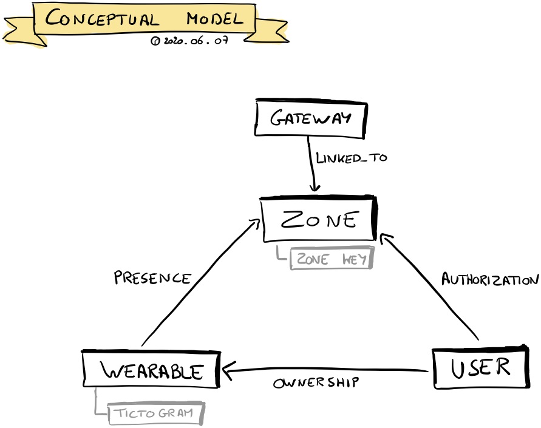

RightCrowd & Rust
Branco Bruyneel
Stagebedrijf

Stageopdracht
Graydon Hoare, 2010
low-level systeemprogrammeertaal
uniek ownership model
Command Line, Embedded, Networking, WebAssembly
Wat is de huidige status van Rust voor het bouwen van Webapplicaties?
Wat is Rust?
Graydon Hoare, 2010
low-level systeemprogrammeertaal
uniek ownership model
Command Line, Embedded, Networking, WebAssembly
Wat is WebAssembly & Hoe werkt het?
Graydon Hoare, 2010
low-level systeemprogrammeertaal
uniek ownership model
Command Line, Embedded, Networking, WebAssembly
Wat is WebAssembly & Hoe werkt het?
Welke front- & backend frameworks zijn er ter beschikking?
Hoe bouwt u een webapp in Rust?
Hoe bouwt u een API in Rust?
Is Rust productie klaar?